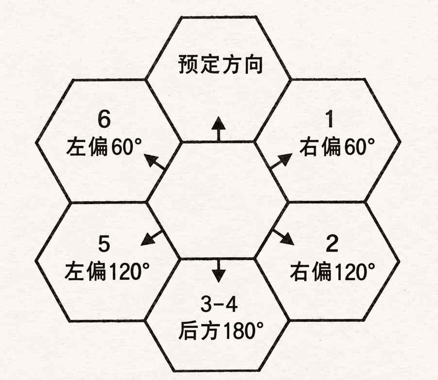

迷路 · Becoming Lost
若队伍没有熟悉当地乡野的向导、没有沿着河流或道路等明确路线前进，也没有使用绘制正确且精细的地图，就可能迷路。应在每日开始移动前，根据地形判定：
| 地形 | 迷路概率 | 迷失方向 |
|---|---|---|
| 平原 | 1/10 | 偏左或偏右 60° |
| 灌木地 | 3/10 | 偏左或偏右 60° |
| 森林 | 7/10 | 任意方向 |
| 崎岖地形 | 3/10 | 偏左或偏右 60° |
| 沙漠 | 4/10 | 偏左或偏右 60° |
| 丘陵 | 2/10 | 偏左或偏右 60° |
| 山地 | 5/10 | 偏左或偏右 120° |
| 沼泽 | 6/10 | 任意方向 |
队伍迷路后，掷 d6 确定移动方向：1–3 表示向左，4–6 表示向右。每个六角格边长代表 60°。若可能偏离 120°，再掷一次 d6：1–3 表示偏离 60°，4–6 表示偏离 120°。若可能向任意方向迷失，则掷一次 d6，以预定行进方向为 12 点方向，顺时针判读：1＝右前方，2＝右后方，3–4＝正后方，5＝左后方，6＝左前方。也就是说，一旦骰子确定队伍迷路，就绝不会意外地仍朝预定方向移动。
